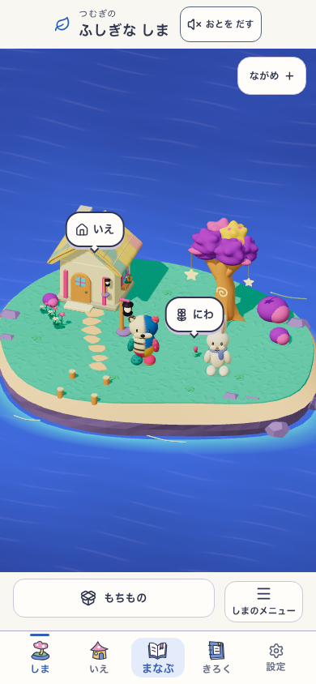
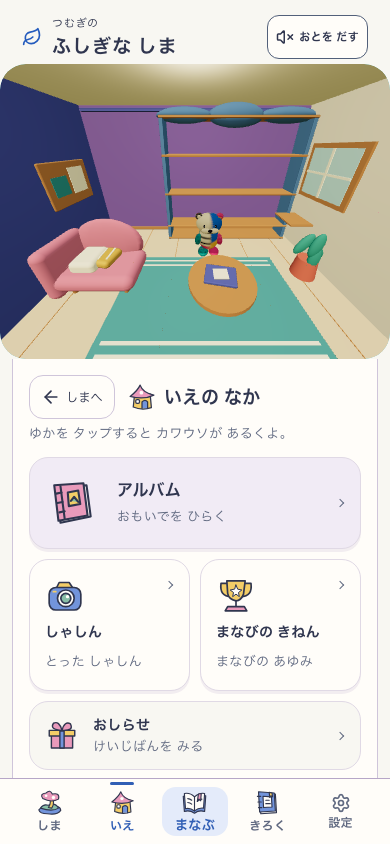
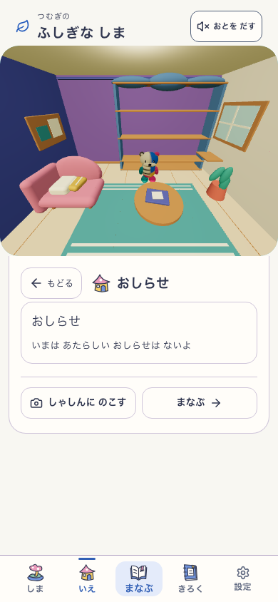
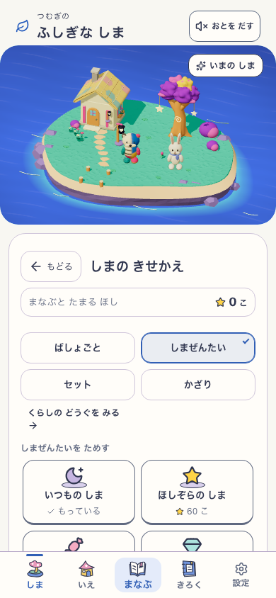
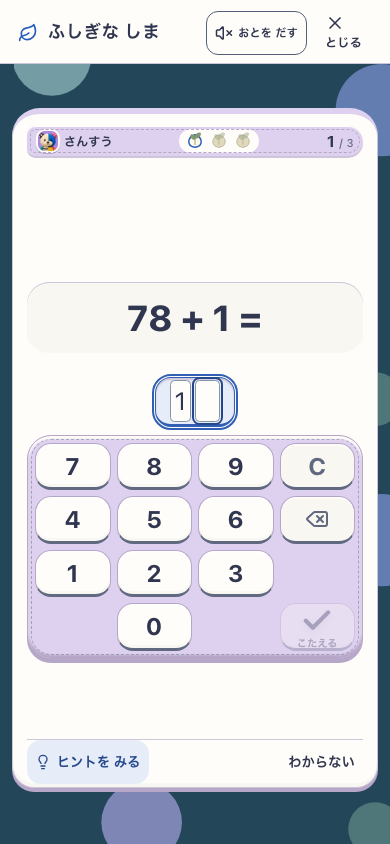
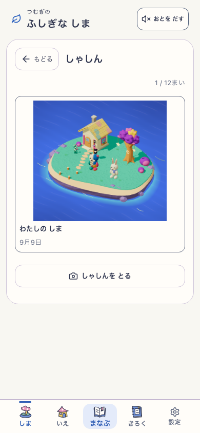
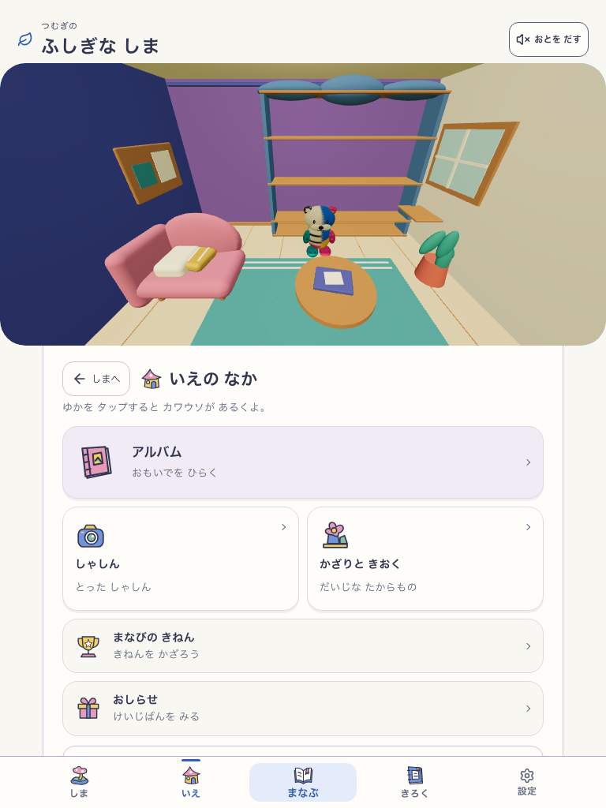
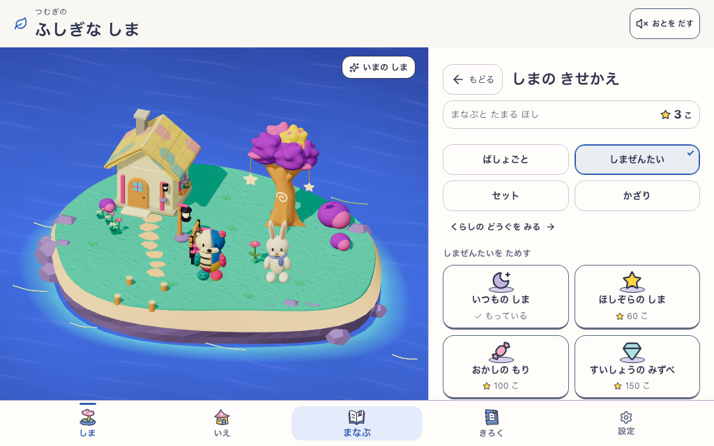

通常の詳細は左に「← もどる」。学習・撮影は右に「× とじる」。入口と画面名を揃え、家の詳細は家へ一段戻る。生成りの操作面と既存の島を保持した実画面です。ローカル固定production buildの限定確認で、本番公開・子どもの使いやすさ評価は含みません。








対象: http://127.0.0.1:5386 · 70ad92c-ui-continuity-working · VITE_ISLAND_ENABLED=true · mystic-island-shore-garden-v18 · 音off / reduced motion。390px列は同じ固定アプリの新規プロフィールfixture。家のお知らせと広い画面は実回答3問後の別fixtureです。